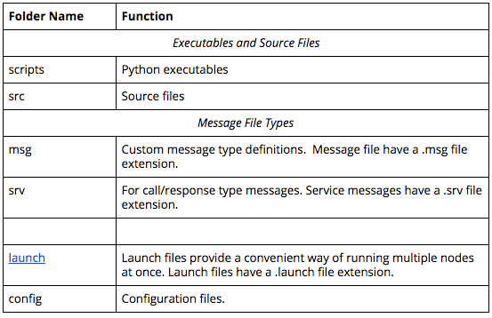

ROS software is organized and distributed into packages, which are directories that might contain source code for ROS nodes, libraries, datasets, and more. Each package also contains a file with build instructions - the CMakeLists.txt file - and a package.xml file with information about the package. Packages enable ROS users to organize useful functionality in a convenient and reusable format.
A catkin workspace is a top-level directory where you build, install, and modify catkin packages. The workspace contains all of the packages for your project, along with several other directories for the catkin system to use when building executables and other targets from your source code.
Step 1: Create a catkin workspace and a sub directory
First, create the top level catkin workspace directory and a sub-directory named src (pronounced source). The top level directory name is arbitrary, but is often called catkin_ws (an abbreviation of catkin_workspace), so we will follow this convention. You can create these two directories in /home/workspace/ with a single command:
$ mkdir -p /home/workspace/catkin_ws/src
Step 2: Navigate to the source directory
$ cd /home/workspace/catkin_ws/src
Step 3: Initialize the catkin workspace
Now you can initialize the catkin workspace which will create a CMakeLists.txt file:
$ catkin_init_workspace
Notice that a symbolic link (CMakeLists.txt) has been created to: /opt/ros/kinetic/share/catkin/cmake/toplevel.cmake
Step 4: Return to top level directory
$ cd /home/workspace/catkin_ws
Step 5: Build the Workspace
$ catkin_make
NOTE: This command must issue from within the top level directory (i.e., within catkin_ws NOT catkin_ws/src)
While it is not essential that you have a deep understanding of the catkin build system, particularly if you are doing most of your development work in Python, it is helpful to learn about it. We encourage you to read the ROS wiki.
After the command is executed you will notice the output of the build processes being echoed to your display. When it has finished you should see the following lines at the end of the output:
-- BUILD_SHARED_LIBS is on -- Configuring done -- Generating done -- Build files have been written to: /home/workspace/catkin_ws/build #### #### Running command: "make -j4 -l4" in "/home/workspace/catkin_ws/build" ####
You now have two new directories: build and devel. The aptly named build directory is the build space for C++ packages and, for the most part, you will not interact with it. The devel directory does contain something of interest, a file named setup.bash. This setup.bash script must be sourced before using the catkin workspace with source devel/setup.bash.
Cloning the simple_arm Package
One of the biggest benefits of using ROS is that it has a really large community of users and developers who have already created a lot of code that you can reuse.
Let’s clone an existing package and add it to our newly created workspace.
Start by navigating to the src directory and cloning the simple_arm package for this lesson from its GitHub repo:
$ cd /home/workspace/catkin_ws/src/ $ git clone -b first_interaction https://github.com/udacity/RoboND-simple_arm/ simple_arm
Building the simple_arm package
After the repo has finished cloning, you can change directory to the top-level of the ROS workspace and build the new package.
$ cd /home/workspace/catkin_ws/
$ catkin_make
Getting Errors?
Sometimes you might get a missing package error while building the catkin workspace. For example: "Could not find a package configuration file provided by controller_manager"
I happen to know that controller_manager refers to a ROS package from ROS Control. We can fix this by installing the associated Linux package, which itself contains and will install the necessary ROS package. But, if I didn't already know this, I would probably have to rely on a Google search to figure out the exact name of the package required.
You can always re-install the package with this command:
$ sudo apt-get install ros-kinetic-controller-manager
See the video here
roslaunch allows you to do the following
To use roslaunch, you must first make sure that your workspace has been built and sourced:
$ cd /home/workspace/catkin_ws/
$ catkin_make
Once the workspace has been built, you can source it’s setup script:
$ source devel/setup.bash
With your workspace sourced you can now launch simple_arm:
$ roslaunch simple_arm robot_spawn.launch
See the video here
ROS Package Dependencies
ROS packages have two types of dependencies: build dependencies and run dependencies.
The rosdep tool will check for a package's missing dependencies, download them, and install them.
To check for missing dependencies in a ROS package:
$ rosdep check <package name>
NOTE: In order for the command to work, the workspace must be first sourced with source devel/setup.bash.
This gives you a list of the system dependencies that are missing, and tells you where to get them.
To have rosdep install packages, invoke the following command from the root of the catkin workspace:
$ rosdep install -i <package name>
simple_arm Package Dependencies
Fortunately, the build and run dependencies for simple_arm package have been already installed in the workspace. You can double-check using rosdep check:
$ cd /home/workspace/catkin_ws/ $ source devel/setup.bash $ rosdep check simple_arm
You'll begin your dive into ROS packages by creating one of your own. All ROS packages should reside under the src directory.
Assuming you have already sourced your ROS environment and your catkin workspace, navigate to the src directory:
$ cd /home/workspace/catkin_ws/src
The syntax for creating a catkin package is:
$ catkin_create_pkg <your_package_name> [dependency1 dependency2 …]
The name of your package is arbitrary but you will run into trouble if you have multiple packages with the same name in your catkin workspace. Try to make it descriptive and unique without being excessively long. Let’s name ours “first_package” and we won’t specify any dependencies. By convention, package names are lowercase.
$ catkin_create_pkg first_package
Navigating inside our newly created package reveals that it contains just two files: CMakeLists.txt and package.xml. This is a minimum working catkin package. It is not very interesting because it doesn't do anything, but it meets all the requirements for a catkin package. One of the main functions of these two files is to describe dependencies and how catkin should interact with them. We won’t pay much attention to them right now.
It's mentioned earlier that ROS packages have a conventional directory structure. Let’s take a look at a more typical package.
Other folders may include

There are many packages that you can install. To see a list of available packages for the Kinetic distribution, take some time to explore the list of ROS package online.